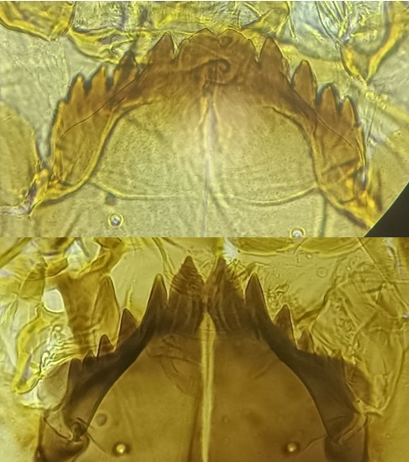

Sous famille des Orthocladiinae
Deux dent médianes proéminentes


Mentum avec 2 dents centrales et 4 dents latérales.
Ressemblance avec le genre Gymnometriocnemus (Cependant Bryophaenocladius possède des tubules anaux contrairement à ce dernier). Confusion également possible avec le genre Pseudorthocladius, cependant le genre P. possède de très longues soies anales et des prémandibules simples.